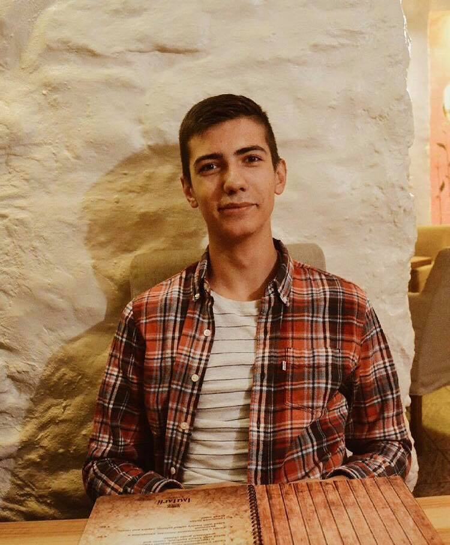

Hello, my name is Oleksandr Kovalchuk and I am tutoring multiple math disciplines. I am from Ukraine but after I graduated from the high school, I moved to Lithuania and currently studying at LCC International University. My major is International Business administrations and my module is Economics. I really loved working with math disciplines at school and currently at the university I gained even more experience. From September 2016 until May 2017 I used to work as an academic tutor at LCC IU in Accounting, Statistics, Calculus for Business and Algebra. My responsibilities included: consulting students on the course material, helping them with homework. Sometimes I provided personal insights when students had personal or group projects in any of the listed disciplines. During the tutoring sections I consulted in English, Russian or Ukrainian language. In addition, I understand Lithuanian pretty good so I don’t mind working with any form of literature written in Lithuanian. The tutoring sessions can be held in Klaipeda at LCC International University or at the student’s home. Also, sessions can be held in English or Russian. If you think that I am the right person to help you, do not hesitate to contact!!!
Tel: +37062847967 Email: okovalc15@students.lcc.lt LCC IU adress: Kretingos g.36, Klaipeda, Lithuania LT-92307